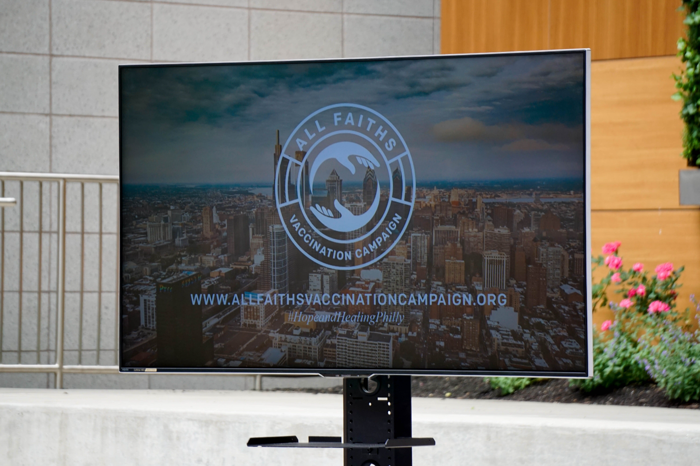

All Faiths Vaccination Campaign
The All Faiths Vaccination Campaign (AFVC), was a partnership of nearly 50 entities and organizations from diverse faith traditions, health care institutions as well as government and civic leaders who sought to achieve vaccination equity in underserved neighborhoods situated in Philadelphia and its collar communities.
I was tasked with developing the campaign's branding, including the logo, color palette and typography along with a landing page and key marketing collateral.
The logo is simple, utilizing holding hands rather than medical iconography such as a needle or a red cross. Orange, being the primary color, often represents joy, determination, encouragement and enthusiasm; a key goal of the AFVC.

My main priority for social media was monitoring mentions through analytic tools, though some social media posts were created, both in English and Spanish to accommodate for different audiences.

The website was meant to be a catch-all for information regarding vaccination locations and educational videos. It's a 1-page layout and mobile-optimized, utilizing big font and easily digestible paragraphs of educational information, designed for the AFVC's target audience of older generations.
For usage in press conference backdrops, videos, virtual backgrounds and other marketing collateral, a wide-range of designs were implemented and readily available for partnered organizations to use at their disposal. Having these elements made it easy for partners to easily distinguish themselves as a part of the AFVC.
The campaign resulted in 429,300 organic social media impressions, 3,491 unique website visits & 8,138 total website visits, and 115 vaccination clinics around Philadelphia displayed partnership.